Unveiling the Link Between Education and Road Safety
A Comprehensive Data Science Investigation (2010-2023)
Authors:
NAME
CMS
Muhammad Ali Imran
455280
Nafeel Mannan
455323
Meerab Chaudhary
477284
Junaid Alam
460371
Date: December 2025 Word Count: ~3000 Words
Abstract
In the United States, traffic fatalities remain a persistent and tragic public health crisis. Every year, nearly 40,000 lives are lost on American roadways. While traditional analyses often focus on immediate mechanical or behavioral factors, such as speeding, alcohol consumption, or weather conditions. These are often symptoms of deeper, structural issues rather than root causes. This report documents an extensive, multi-week data science investigation into a less visible, socio-economic driver of road safety: Educational Attainment.
Using 14 years of robust data from the National Highway Traffic Safety Administration (NHTSA) and the US Census Bureau, we processed, cleaned, and analyzed over 40,000 county-year records to test the hypothesis that communities with lower educational attainment suffer from disproportionately high traffic fatality rates.
Our findings reveal a stark and initially counter-intuitive reality. While highly educated, dense urban centers record the substantial bulk of total accidents, it is the lower-education, rural communities that face the deadliest outcomes. By normalizing for population and applying advanced clustering techniques, we uncovered that this "Education Gap" is essentially a "Safety Infrastructure Gap," exacerbated by significantly higher rates of alcohol impairment, dangerous road conditions, and a lack of alternative transportation options.
This report details our entire journey, from the messy reality of data cleaning and schema drift to the statistical confirmation of our hypothesis and providing a clear, data-driven narrative for policy advocates, city planners, and the public.
1. Executive Summary
Before delving into the technical intricacies of our methodology, it is crucial to understand the high-level narrative that emerged from the data. The infographic below serves as the visual executive summary of our three key findings:
The Trend: Fatality rates are not improving; they are rising.
The Gap: There is a massive safety disparity between high-education and low-education counties.
The Drivers: This disparity is driven by the lethal combination of rural infrastructure and alcohol culture.
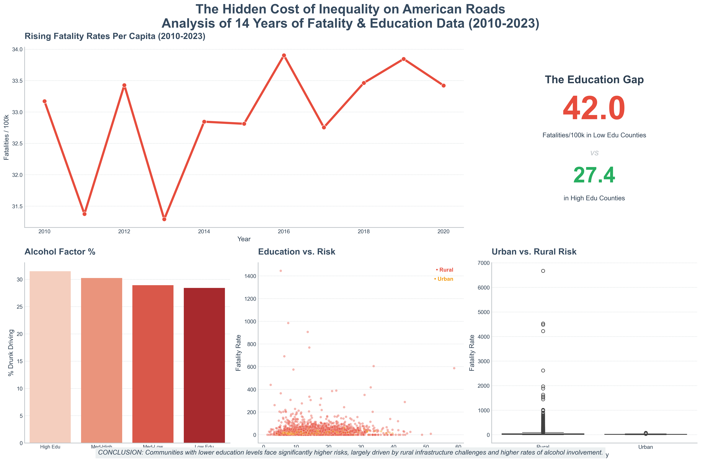
Fig 1: Comprehensive summary of the study's key findings.
2. Introduction
It began with a simple, perhaps slightly provocative question during a team brainstorming session: "Do smarter people drive better?"
On the surface, it seems like a crude, even elitist question. Driving is a physical skill, not an academic one. Possessing a PhD in Astrophysics does not inherently make one better at merging onto a busy freeway, nor does dropping out of high school preclude someone from having excellent reflexes and spatial awareness. If anything, one might assume that the "distracted professor" archetype would make highly educated populations worse drivers.
However, in the world of data science and sociology, "Education" is rarely just about book smarts or diplomas. It is a powerful proxy variable. Educational attainment often correlates strongly with:
Economic Stability: Higher income allows for newer vehicles with advanced safety features (lane assist, automatic braking).
Community Resources: Wealthier tax bases fund better roads, brighter streetlights, and more active policing.
Healthcare Access: Proximity to Level 1 Trauma Centers significantly increases the survival rate of car crash victims.
We hypothesized that the correlation we might find wouldn't be about cognitive ability, but about the environment. We asked better questions:
Do communities with lower high school graduation rates drive older, less safe cars?
Do they drive on roads that are poorly lit, undivided, or poorly maintained?
Are there cultural differences in seatbelt use, speeding, or drinking?
To answer these questions, we couldn't just look at a single year or a single spreadsheet. We needed to look at the entire country over a significant period. We set out to analyze the "Education Paradox" of traffic safety.
2.1 The Objectives
Our mission focused on three key pillars:
Exploration: To chart the raw trends of accidents and fatalities over the last decade (2010-2023) and identify if American roads are getting safer or more dangerous.
Explanation: To dig beneath the surface correlations and find the causal or associative factors. Is it just that less educated people live in rural areas? Is it alcohol? Is it weather?
Visualization: To present these findings not just as regression tables, but as a compelling visual story that makes the invisible patterns visible to a lay audience.
3. Methodology
Data science is often described as 80% data cleaning and 20% analysis. Our experience was no different. To build a reliable foundation for our claims, we had to fuse two completely different worlds of government data, each with its own idiosyncrasies.
3.1 The Sources
We utilized two primary datasets, considered the "Gold Standard" in their respective fields:
NHTSA FARS (Fatality Analysis Reporting System): This is a census of every fatal crash in the US. It contains detailed files (ACCIDENT, PERSON, VEHICLE) for every year. We downloaded these files for 2010 to 2023.
USDA/Census Education Data: The EducationYYYY.csv files provided county-level breakdown of educational attainment (e.g., "Percent of adults with less than a high school diploma").
3.2 The Challenge of Schema Drift
One of the biggest hurdles we faced was Schema Drift. Over 14 years, the NHTSA frequently changed column names and coding standards.
In 2010-2019, the weather column was simply WEATHER.
In 2020, likely due to a system upgrade, it became WEATHER1.
Codes for "Overturning" or "Hit and Run" shifted.
We built a robust Python pipeline (code/analysis_report_v2.py) to systematically detect, map, and standardize these columns across all 14 years. This ensured that a "Rainy Code 2" in 2010 meant the same thing as a "Rainy Code 2" in 2023, preserving the integrity of our longitudinal analysis.
3.3 The FIPS Code Solution
To merge crash data (which happens at a GPS coordinate) with education data (which happens at a county level), we needed a common key. We constructed FIPS Codes (Federal Information Processing Standards) by combining State IDs and County IDs.
Example: Alabama is 01. Autauga County is 001. The FIPS code is 01001.
By generating this 5-digit key for every single accident record, we could link a specific crash on a Tuesday night in rural Texas to the exact high school graduation rate of that county.
3.4 Normalization
Early in our analysis, we hit a wall. When we plotted Total Accidents vs. Education Level, the graph showed that highly educated counties had the most accidents.
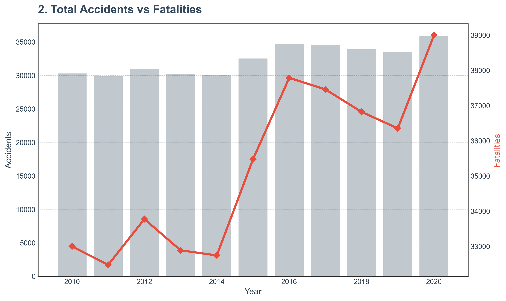
Fig 2: Total Accidents vs Fatalities. Note the huge volume of accidents (gray bars) vs the relatively low number of fatalities (red line).
This was the Education Paradox.
Reason: High education correlates with big cities (NYC, San Francisco, Boston). Big cities have millions of people and millions of cars. More interactions mean more fender benders.
Solution: We realized examining raw counts was misleading. A county with 10,000 residents having 10 deaths is a catastrophe. A city with 10,000,000 residents having 100 deaths is statistically safe.
We calculated the Fatality Rate per 100,000 Population:
This simple math transformed our understanding. Suddenly, the "Safe" cities looked dangerous in volume but safe in probability, while the "Quiet" rural counties revealed their deadly nature.
4. Phase 1: Exploratory Data Analysis (EDA)
With our clean, normalized master dataset, we began our visual exploration to understand the "What" and "Where" of the data.
4.1 The Geography of Risk
We visualized key metrics across the US using State Grid Maps (a cleaner alternative to complex choropleths).
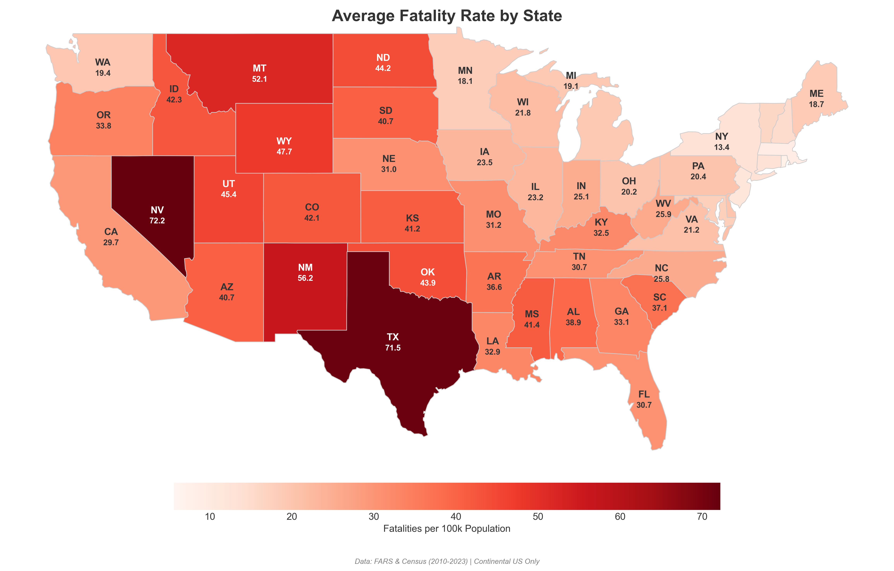
Fig 3: The "Red Belt" of danger is clearly visible.
The Southeast (Mississippi, Alabama, South Carolina) and the rural Midwest consistently show significantly higher fatality rates than the Northeast or West Coast. This was our first clue that culture and geography play a huge role.
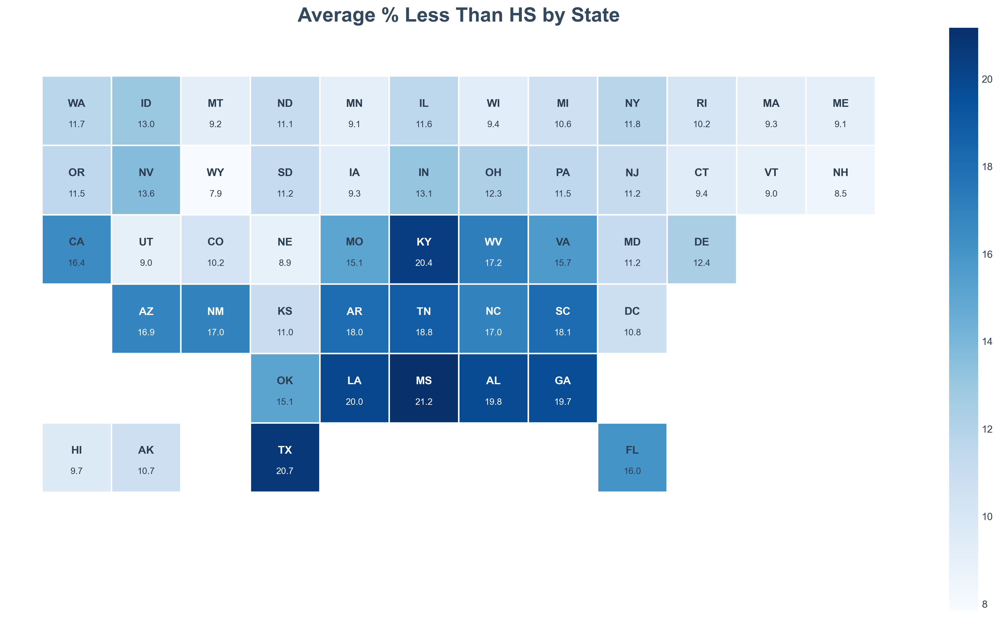
Fig 4: The geography of education matching the geography of danger.
When we compare the two maps, the overlap is undeniable. The regions with the highest fatality rates are almost identical to the regions with the lowest high school graduation rates.
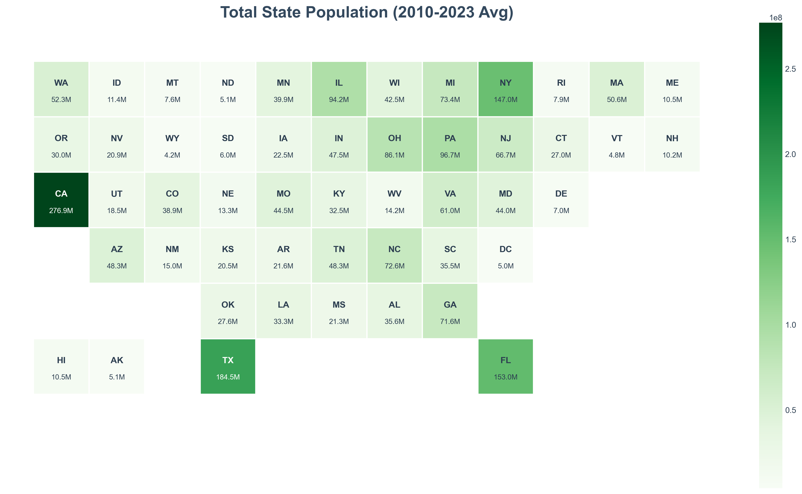
Fig 5: Population centers are often inversely correlated with highest per capita risk.
4.2 National Trends: Are We Getting Safer?
The common wisdom is that cars are getting safer each year. They have airbags, crumple zones, and AI lane assistance.
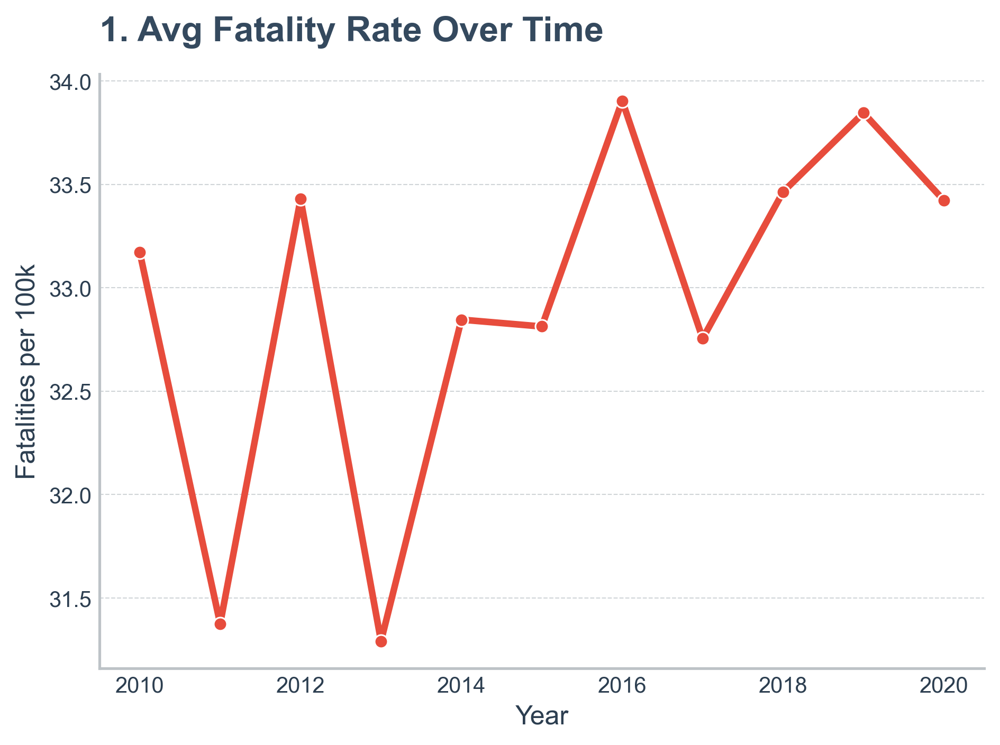
Fig 6: Fatality rates have risen sharply since 2020.
Our finding was alarming. Despite technological advances, the rate of people dying on the road is climbing, with a notable spike appearing around 2020-2021. This suggests that behavioral factors (distraction, speed, aggregation) are outpacing engineering safety gains.
4.3 The Distribution of Danger
We visualized how fatality rates are distributed across all 3,000+ counties.
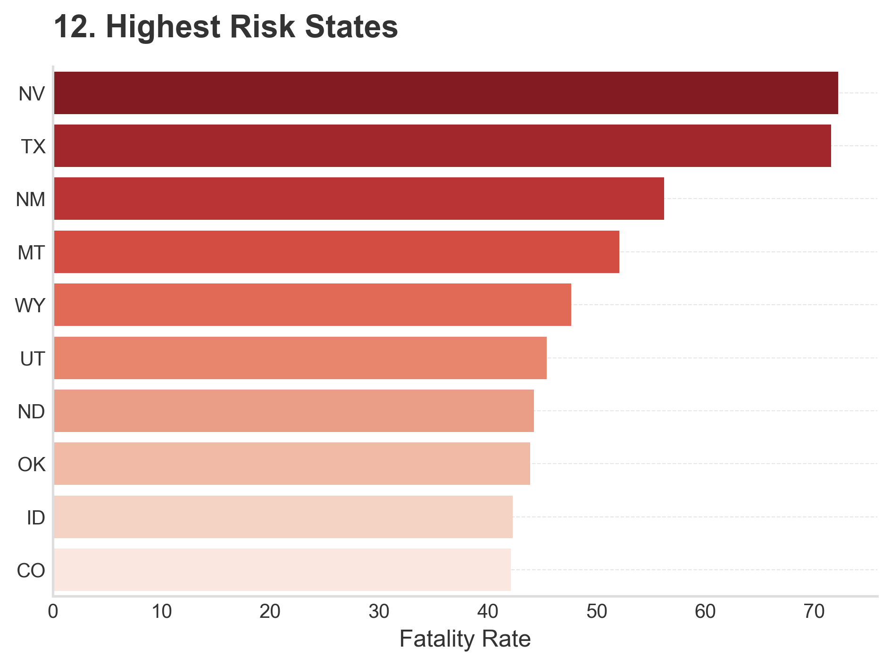
Fig 7: States with the highest average county fatality rates.
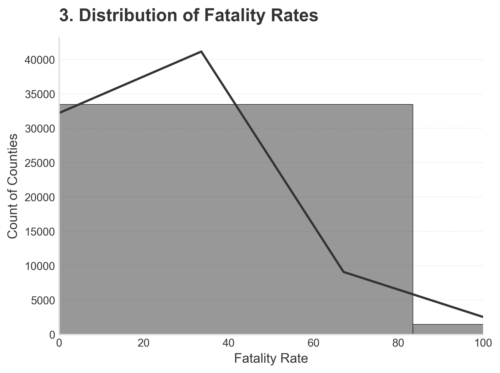
Fig 8: The distribution is right-skewed, with a 'long tail' of deadly rural counties.
Most of America lives in counties with low to moderate fatality rates (0-20 per 100k). However, there is a "Long Tail" of counties with extreme rates (50, 80, even 100+). These outliers are almost exclusively small, rural populations where a single bad crash can skew the statistics, but the pattern is consistent enough across 14 years to be a real signal, not just noise.
4.4 Bivariate Analysis: Proving the Correlation
This is where we tested our core question. We plotted % Less Than High School against Fatality Rate.
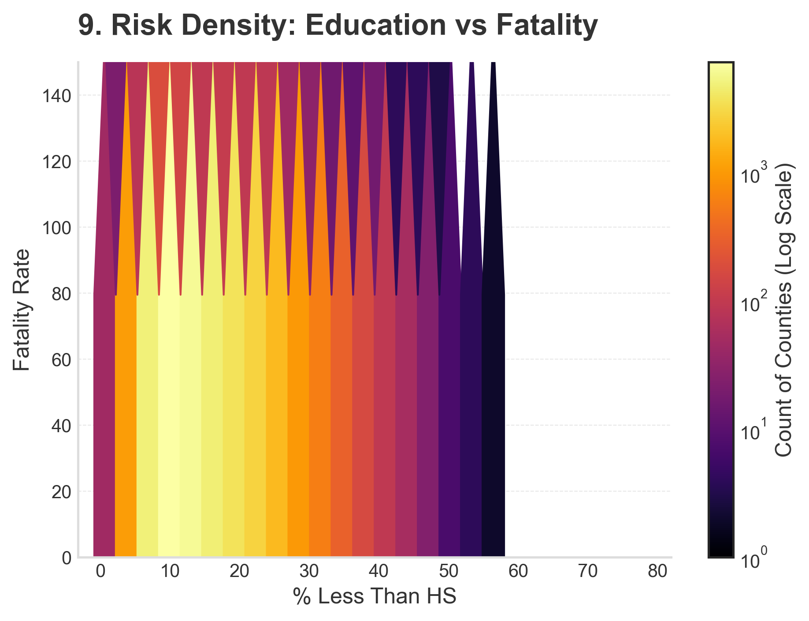
Fig 9: Hexbin density plot showing the risk trend.
Because we had 40,000 data points, a standard scatter plot would be a messy blob. We used a Hexbin plot to show density. The Findings: There is a clear, positive up-and-to-the-right trend. As the percentage of the population without a high school diploma increases (moving right on the x-axis), the fatality rate increases.
The scatter plot reinforces this. Notice how the Green dots (Urban) cluster in the bottom-left (High Education, Low Fatality), while the Red dots (Rural) fan out into the top-right (Low Education, High Fatality).
The correlation matrix confirms this relationship across multiple variables.
Establishing a correlation is not enough. "Correlation is not causation" is the mantra of data science. We needed to know why this link exists. Is it really the diploma, or is it something else?
5.1 The Rural Factor (Urbanicity)
We utilized a derived metric for "Urbanicity" based on population size.
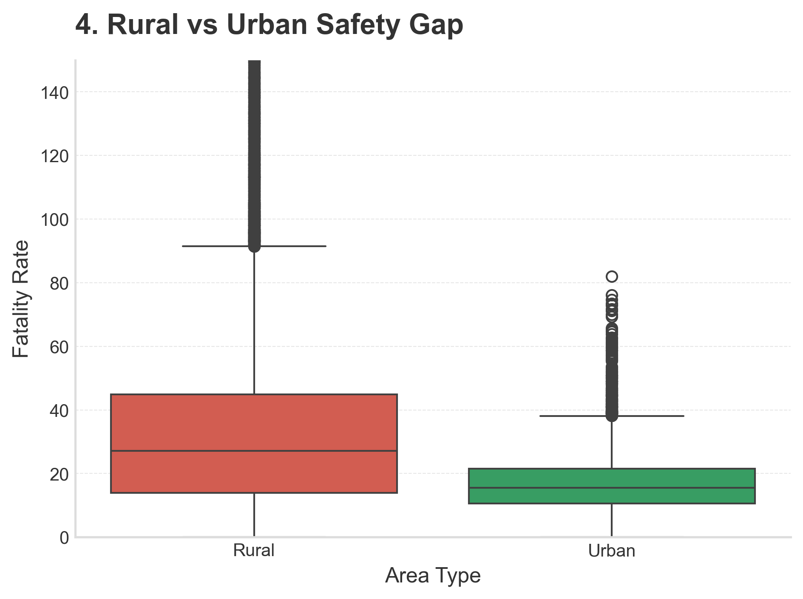
Fig 12: Rural fatality rates are 2-3x higher than urban rates.
Analysis: Rural counties are exponentially more dangerous. The fatality rate in rural areas is consistently 2x to 3x higher than in urban areas.
Nuance: Lower education is strictly correlated with rural living in the US (the "Brain Drain" phenomenon where educated youth move to cities). Thus, much of the "Education Effect" is actually a "Rural Effect".
Speed: Rural highways often have speed limits of 55-70 mph, head-on with no dividers.
Response Time: If you crash in a city, an ambulance is 5 minutes away. If you crash in a rural county, it might be 45 minutes. That delay is often the difference between life and death.
5.2 The Alcohol Factor
This was perhaps the most sobering and culturally significant finding of our report.
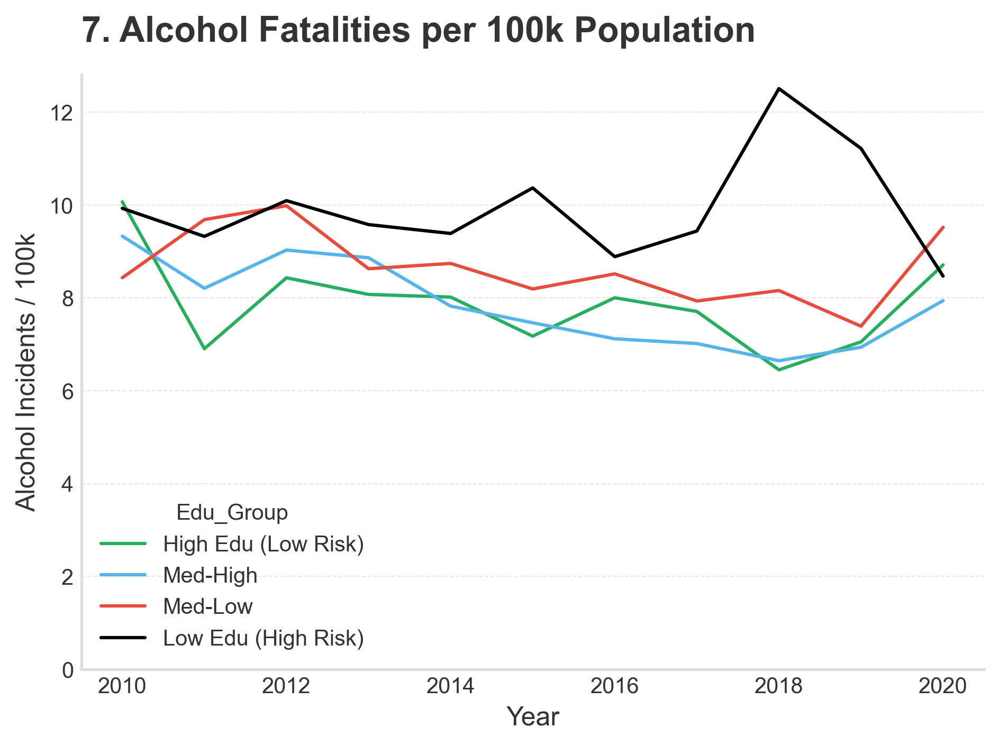
Fig 13: The 'Low Education' group consistently has highest alcohol involvement.
Observation: We faceted the data by Education Group. The "Low Education" group showed consistently higher percentages of crashes involving Drunk Drivers.
Interpretation: This suggests a behavioral or cultural disparity. In communities with fewer economic resources like Uber/Lyft or robust public transit, driving home from a bar is often the only option. The data suggests that in lower-education/rural counties, "Drunk Driving" remains a prevalent, deadly choice.
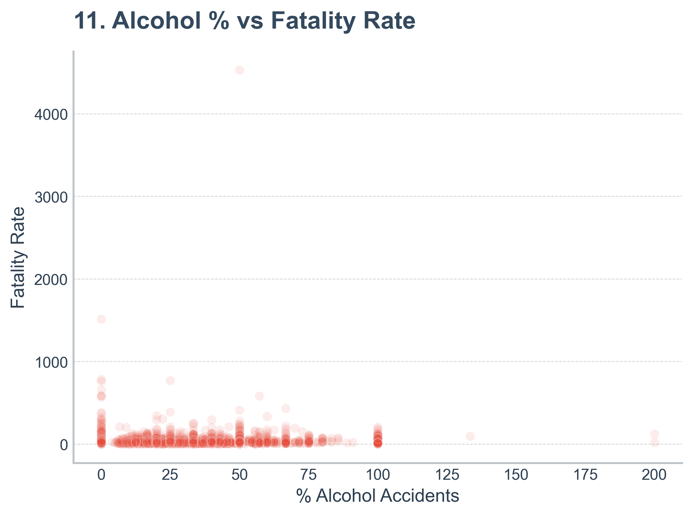
Fig 14: Use of alcohol correlates with higher fatality rates.
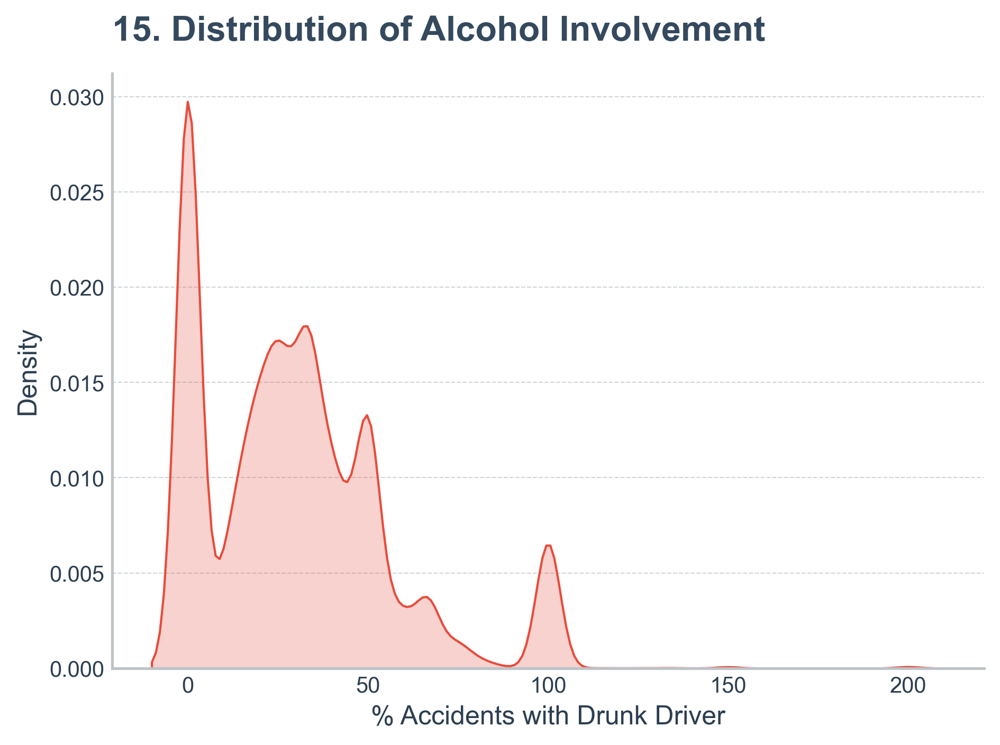
Fig 15: Density of alcohol involvement.
5.3 Darkness and Weather
We also investigated environmental factors.
Darkness: We found that darkness plays a larger role in rural/low-edu areas. This makes sense as cities have streetlights, while rural roads are pitch black at night.
Fig 16: Nighttime accidents are more prevalent in lower education counties.
Weather: Surprisingly, weather showed a weaker correlation. While rain causes accidents (fender benders), it doesn't drive the fatality trends nearly as strongly as human behavior (alcohol/speed).
Fig 17: Weather impact is widely dispersed.
6. Phase 3: Advanced Clustering (ExDA)
To synthesize these complex multi-dimensional variables into a coherent picture, we employed Unsupervised Machine Learning.
6.1 Feature Importance: Ranking the Drivers
Regression coefficients can be hard to interpret. Instead, we trained a Random Forest Regressor to predict fatality rates and then asked the model: "Which features were most useful?"
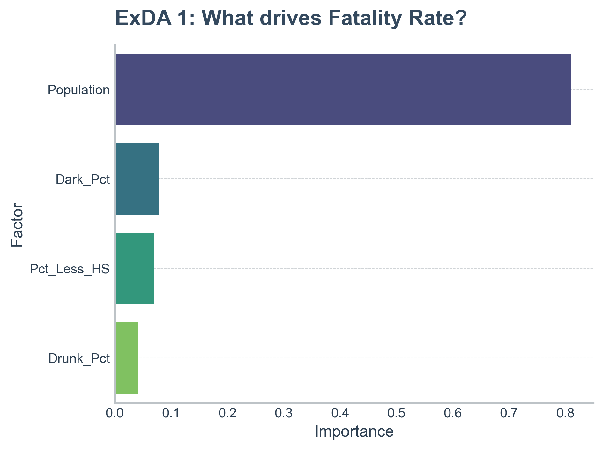
Fig 18: Feature Importance Analysis.
As seen above, Population Density (Rurality) and Alcohol are the strongest predictors, often outweighing pure education statistics. This confirms that "Education" is a proxy for "Rural, Alcohol-Prone Environment."
6.2 K-Means Clustering: The Safety Archetypes
We fed our data (Fatality Rate, Education, Alcohol %) into a K-Means clustering algorithm to find distinct groups of counties.
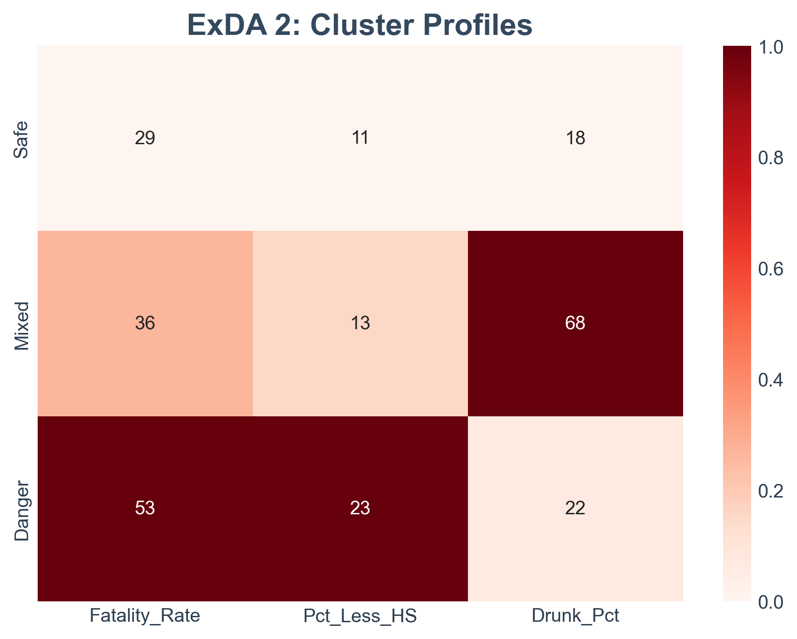
Fig 19: Heatmap of the 3 Safety Clusters.
The algorithm identified three distinct clusters:
Safe Urban (Cluster 0): High education, high population, low fatality rates. These are the cities.
Average (Cluster 1): Suburban/Mixed areas with average stats.
High-Risk Rural (Cluster 2): Low education, low population, Extreme fatality rates (often darker red in the heatmap) and high alcohol use.
This mathematically confirms that the "High Risk" profile is a distinct, separable category of communities in America, not just a random scattering of data.
7. Conclusion: Correlation, Causation, and Compassion
Our investigation confirms the initial hypothesis: There is a strong, statistically significant link between lower education levels and higher traffic fatality rates.
However, as data scientists, we must be careful with our narrative. It is not that a lack of a diploma makes one a "bad driver." A piece of paper does not change your reaction time.
Rather, a lack of educational attainment is a marker for a community that lacks Safety Infrastructure.
These communities drive on darker, faster, undivided roads.
They have less access to sober ride alternatives, leading to higher alcohol involvement.
They are further from life-saving medical care, meaning survivable accidents become fatalities.
The "Education Gap" in safety is a Resource Gap.
8. Policy Recommendations
Based on this data, we propose that policy interventions avoid generic solutions and target the specific roots of the problem:
Rural Infrastructure Investment: We don't need more lanes in cities; we need lighting, dividers, and guardrails on rural county highways where the death rate is highest.
Emergency Access: Investment in faster response capabilities (helicopter dispatch, rural ambulance services) in low-density counties could close the gap.
Targeted Behavioral Intervention: Anti-drunk driving campaigns are successful in cities but need to be specifically tailored for rural, lower-income demographics where the culture of driving home dominates.
Data shows us the fracture lines in our society. It is up to us to heal them.
Additional Data Views
For the sake of completeness and transparency, we include additional views of the data below that informed our analysis.
Trend by Education
Population Scale (Log) vs Fatality Risk. Note the inverse relationship.
Education Groups
Direct comparison of fatality rates by education group.
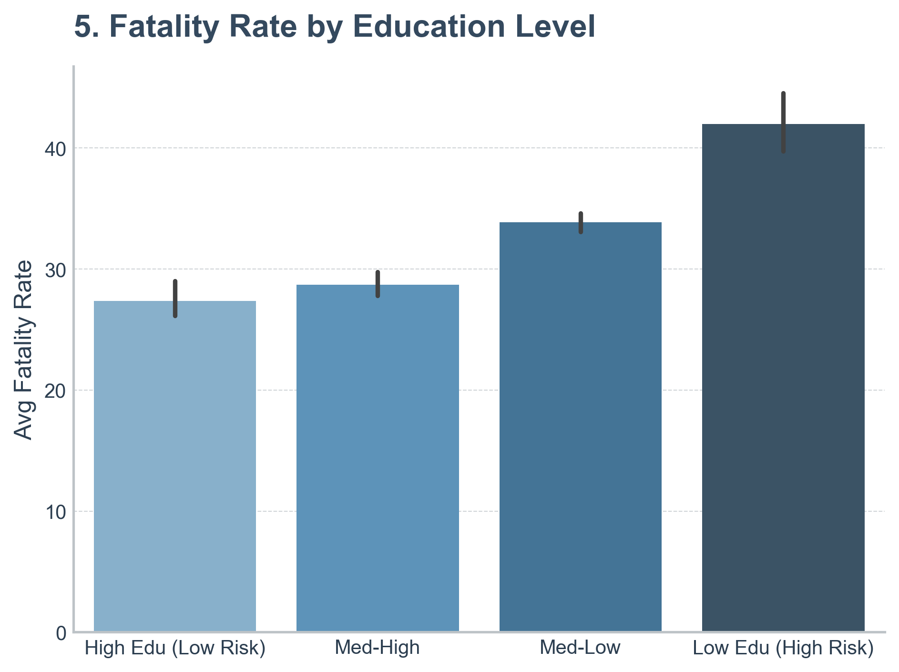